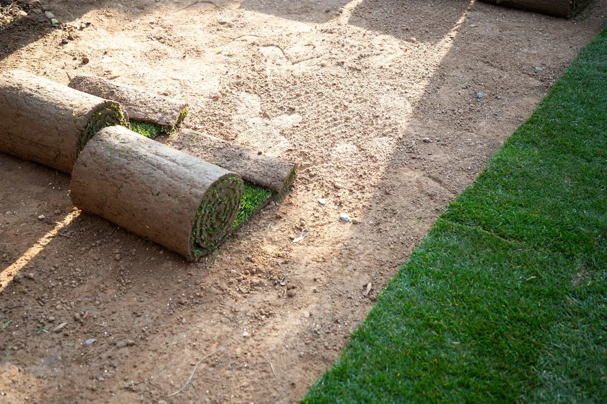

Landscape Building
New landscapes built around your yard, soil, and climate, with drainage, irrigation, and lighting planned in where the site needs them.
Explore Landscape BuildingAt Big Easy Lawn Care, we provide professional landscaping in New Orleans for homes and businesses. We build new landscapes, restore tired ones, and handle the irrigation, drainage, and lighting behind them, with every project planned around our heat, humidity, heavy rain, and soil.
Our landscaping services in New Orleans center on two jobs: landscape building for new landscapes and landscape restoration for yards that have declined. Alongside them, we handle irrigation, drainage, and lighting, so every landscape is planned for local heat, humidity, and heavy Gulf rain.
New landscapes built around your yard, soil, and climate, with drainage, irrigation, and lighting planned in where the site needs them.
Explore Landscape Building
Tired, overgrown, or weather-worn yards brought back by clearing overgrowth, repairing the lawn, and replacing plants that cannot be saved.
Explore Landscape RestorationLandscaping services in New Orleans include building new landscapes, restoring yards that have declined, and adding the irrigation, drainage, and lighting that keep a yard working. We start each project with a free on-site estimate and plan it around local heat, humidity, rain, and soil.
New landscapes built around your yard, soil, and climate, from the first visit to the final walkthrough.
Bare patches, weeds, compacted soil, and overgrown plantings brought back into healthy shape.
Water delivered where plants need it, and moved away from the spots where it pools after a storm.
Paths, steps, and plantings lit so the yard stays safe and usable after dark.
Every job goes to a fully insured professional, and our work is backed by a satisfaction guarantee.
You get a clear quote and a clear schedule before work starts, so you know the plan up front.
Landscaping needs a different plan in New Orleans because intense heat, humidity, and heavy Gulf rains test every outdoor project. Plants have to survive long, wet summers, beds have to drain after a downpour, and new plantings need time to root. A landscape copied from a drier, cooler region rarely lasts in New Orleans.

The landscape elements that matter most for New Orleans yards are irrigation, drainage, lighting, and plant choice. Water has to reach roots in dry spells and leave quickly after storms, lighting keeps the yard usable after dark, and plants proven in Louisiana heat and humidity are more likely to perform well than untested ones.
8 to 12 in deep
Beds are watered deeply and less often, so moisture reaches 8 to 12 inches. Drip lines and soaker hoses lose less to evaporation.
Beds 4 to 8 in up
Raised beds shed heavy rain and give roots room. Standing puddles and squishy soil are signs the yard holds too much water.
After dark
Light along paths, steps, and beds makes the yard safer at night and easier to enjoy once the summer heat breaks.
2+ years of trials
LSU AgCenter Super Plants earn the name after at least two years of trials in north and south Louisiana.
Watering depth, bed height, and Super Plant trials follow LSU AgCenter guidance. Early morning or late evening watering also cuts evaporation.
Our New Orleans landscaping service works in three steps. We visit the property and give you a free, no-obligation estimate, we agree on the plan and a clear schedule before work begins, and a fully insured professional carries out the project through to a final walkthrough with you on site.
We look at the yard, soil, shade, and where water collects, then give you a clear quote.
Together we set the scope, the materials, and the timeline, so you know what happens and when.
A fully insured professional does the work, and we walk the finished project with you.
The best time for landscape planting in New Orleans is fall, from October through mid-December, when LSU AgCenter says roots grow while tops slow down. Trees and shrubs planted then are better established before the first hard summer. Other work, such as drainage and lighting, is scheduled after a free on-site estimate.
Roots grow through the cool months, ready for summer.
A good window to settle the layout and fix drainage before spring.
Lawns start greening up in late February, so bare areas and tired beds show clearly.
Heat and storms test new plantings and show where water pools.

Cost depends on the size of the project, the materials, and the scope of work. We quote after a free, no-obligation look at the property.
Get Free EstimatesBefore hiring landscapers in New Orleans, decide whether the yard needs a new build or a restoration, note where water collects after rain and which areas need light, and think about who will keep the landscape up afterward. Those answers shape the scope, the quote, and how long the results last.
A bare or outdated yard suits landscape building, while a yard in decline often needs landscape restoration first.
Note puddles, soggy spots, a rising water bill, and dark paths, so irrigation, drainage, and lighting are planned in from the start.
New plantings need watering, mulch, and trimming. Our lawn and yard maintenance plans cover the mulching and trimming.
Our customers mention the same things again and again: prompt, courteous crews, detailed cuts with a thorough cleanup afterward, fair pricing, and fast replies, including a callback within 24 hours on an overgrown lawn. Here is what a few of them shared with us.
The lawn care service I received from start to finish was great. The staff are always prompt and courteous, the prices can't be beat and my yard looks amazing, all thanks to Big Easy Lawn Care!
Big Easy Lawn Care is great! I called them up to take care of an overgrown lawn, and they were able to get back with me within 24 hours. Their pricing was very reasonable as well. We'll be using this company from now on for our lawn care needs.
The guys at Big Easy Lawn Care did an excellent job. They did a very detailed cut and cleaned up thoroughly after. I am so happy with the results! My lawn looks better than ever before, thanks to them!
Landscaping in New Orleans pairs well with regular lawn and yard maintenance to keep new plantings tidy, hardscape such as patios and stone paving, and outdoor living features like pergolas and decks. Each starts with a free, no-obligation estimate and can be planned alongside your landscape project.
Landscaping is the work of shaping and planting outdoor space so it looks good and works well. It covers plants, beds, and lawn, along with the systems behind them, such as irrigation, drainage, and lighting. In New Orleans, good landscaping is also planned around intense heat, humidity, and heavy rain.
Landscaping cost depends on the size of the project, the materials, and the scope of work, so a small restoration costs far less than a full yard rebuild with drainage and lighting. The most accurate number comes from a free on-site estimate, which we provide with no obligation to book.
A small yard usually costs less to landscape because it needs fewer plants and materials, but the price still depends on what the project includes. Adding irrigation, drainage work, or lighting widens the scope. We quote small New Orleans yards the same way as large ones, after a free look at the property.
Well-planned landscaping can add to a home's value by improving curb appeal and how the yard works, though the effect varies with the market and the quality of the work. Plants suited to the site, sound drainage, and a yard that is kept up afterward all help protect that value over time.
Hardscape is the non-living part of a landscape: paved paths, patios, courtyards, walls, and fire or water features. Softscape is the living part, such as plants, beds, and lawn. Most good New Orleans yards balance the two, and our hardscape service covers stone paving, patios, courtyards, and fire and water features.
Edging is the border that separates a planting bed from the lawn or a path. It can be a clean cut soil edge or a physical border such as brick, stone, or metal. Edging keeps mulch in the bed, stops grass from creeping into plantings, and gives the whole yard a finished outline.
Commercial landscaping is the building and upkeep of grounds for businesses and managed properties, such as offices, storefronts, and rental properties. The focus is on grounds that look consistent, handle foot traffic, and stay safe for visitors. We serve commercial properties across greater New Orleans with the same services homeowners use.
A berm is a raised mound of soil built into a landscape, often planted with shrubs or grasses. Berms add height and screening, and they can steer surface water away from low spots. In flat, rain-heavy New Orleans yards, a berm needs a planned path for runoff so water is not pushed toward the house.
Join our satisfied and happy customers. Get your free lawn care assessment today.